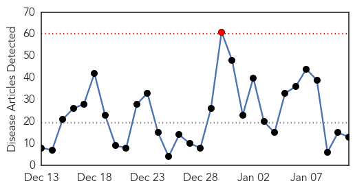
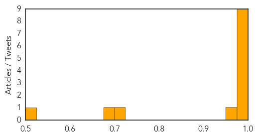
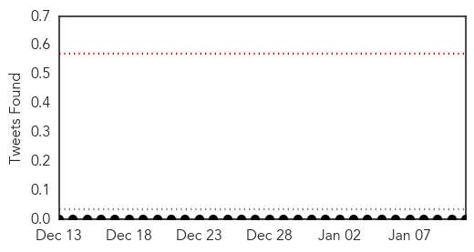

Influenza
30-Day Web Trend
1 alerts, 0 warnings

30-Day Twitter Trend
0 alerts, 0 warnings
Article Locations
Article Confidences
Top Articles:
- 0.999
- Experts: Cape flu season packs a punch
- 0.999
- Area doctors still reporting high numbers of flu cases in S.C.
- 0.998
- Flu season near its peak; Northwest Colorado skirts worst of it
- 0.997
- Vaccine can’t handle this ‘severe’ flu season
- 0.997
- CDC asks doctors to use antivirals to fight flu strains
- 0.997
- CDC asks doctors to use antivirals to fight flu strains
- 0.994
- Flu Takes Its Toll Early In Season
- 0.993
- Montreal public health battles high number of flu cases with clinics
- 0.980
- Flu's swift spread stuns Iowa care facilities
- 0.973
- Take flu season seriously
- 0.719
- Health officials: flu rate higher than in the past
- 0.686
- Authorities guarantee zero infected meat at domestic markets
- 0.502
- Taiwan tests farms in three ...｜Society｜WCT
Top Tweets:
-
No tweets found for Jan 11, 2015
Swine Flu
30-Day Web Trend
4 alerts, 6 warnings

30-Day Twitter Trend
0 alerts, 0 warnings

Article Locations

Article Confidences

Top Articles:
- 1.000
- Sector 42 woman is Chandigarh’s first H1N1 patient
- 0.997
- Three new cases of swine flu in city, authorities on alert
- 0.996
- Alert in Fatehabad after patient’s death in Jind
- 0.996
- Odisha Government alerts medical institutions to be vigilant against swine flu, H1N1 virus, Odisha Current News, Odisha Latest Headlines
- 0.995
- Swine Flu Ward at SCB to Open in Two Days
- 0.991
- Eight swine flu cases detected in Haryana: Official
- 0.985
- 65-year-old tests positive for swine flu
- 0.975
- Man tests +ve for swine flu, state on alert
- 0.960
- Three new cases of swine flu in Delhi
- 0.908
- 3 New cases of swine flu in Delhi
Top Tweets:
-
No tweets found for Jan 11, 2015